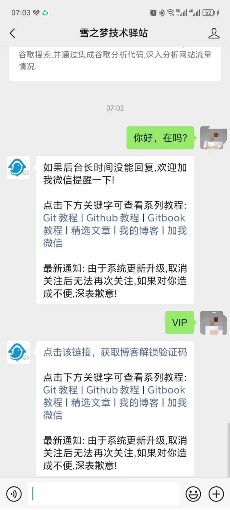

1. 两处改动升级到多公众号
教你如何使用springboot开发微信公众号之两处改动轻松升级到多公众号

致读者: 点击上方 “雪之梦技术驿站” → 点击右上角“ ... ”→ 点选“设为星标★ ” 加上星标，就不会找不到我啦！
1.1. 引言
如果你正在开发微信公众号,那么这个项目一定不能错过: WxJava - 微信开发 Java SDK
真的可以少走很多弯路,之前使用wx-java-mp-spring-boot-starter快速集成了单个微信公众号,想来只能部署一个公众号太过单一需求,本想着如何研究一下多公众号部署教程,没想到人家自己就提供了wx-java-mp-multi-spring-boot-starter.
话不多说,直接上核心代码,相信有点基础的开发者都能看得懂,不啰嗦,上干货!
如果还没有开发过微信公众号,建议先从这篇系列文章开始,结尾也提供了相关文章链接.
1.2. 单账号公众号如何集成到springboot项目
以下是最精简的核心代码,如果想要了解更详细配置可参考官方文档: wx-java-mp-spring-boot-starter
最终实现效果如下:
支持自动回复消息,不仅包括关键词回复,收到消息回复以及被关注回复等常规消息,还能接收到用户取消订阅等特殊事件的消息推送.

pom.xml依赖文件
当前最新版本
4.6.0,点击这里查询最新版[https://developer.aliyun.com/mvn/search}(https://developer.aliyun.com/mvn/search)
<dependency>
<groupId>com.github.binarywang</groupId>
<artifactId>wx-java-mp-spring-boot-starter</artifactId>
<version>4.6.3.B</version>
<type>pom</type>
</dependency>
application.yml配置文件
# 雪之梦技术驿站
wx:
mp:
# 单公众号配置(必填)
app-id: yourappid
secret: yoursecret
token: yourtoken
aes-key: youraeskey
WxMpController.java接口请求
这是java后台服务自动和微信公众号服务器后台交互的唯一途径,通过暴露出公共接口开放给微信公众号服务器,来完成消息的验证以及自动回复等相关接口调用.
验证消息来自微信服务器
验证签名无误后原封不动返回随机字符串
echostr文本格式
@AnonymousGetMapping(produces = "text/plain;charset=utf-8")
public String checkSignature(@PathVariable String appId,
@RequestParam(name = "signature", required = false) String signature,
@RequestParam(name = "timestamp", required = false) String timestamp,
@RequestParam(name = "nonce", required = false) String nonce,
@RequestParam(name = "echostr", required = false) String echostr) {
// 校验签名
log.info("签名校验 ===》 微信加密签名: {} 时间戳: {} 随机数: {} 随机字符串: {}",signature,timestamp,nonce,echostr);
if (StringUtils.isAnyBlank(signature, timestamp, nonce, echostr)) {
throw new IllegalArgumentException("非法请求,可能属于伪造的请求!");
}
if (!wxMpService.switchover(appId)) {
throw new IllegalArgumentException(String.format("未找到对应appId=[%s]的配置,请核实！", appId));
}
if (!wxMpService.checkSignature(timestamp, nonce, signature)) {
log.error("签名校验 ===》 非法请求");
throw new IllegalArgumentException("非法请求,可能属于伪造的请求!");
}
log.info("签名校验 ===》 验证成功");
return echostr;
}
接收并自动回复微信公众号消息
支持明文和密文两种加密方式,测试时建议明文不需要加密解密,正式上线时请改为密文方式,同时要支持加解密等协议规范.
@AnonymousPostMapping(produces = "text/xml; charset=UTF-8")
public String replyMessage(
@PathVariable String appId,
@RequestBody String requestBody,
@RequestParam("signature") String signature,
@RequestParam("timestamp") String timestamp,
@RequestParam("nonce") String nonce,
@RequestParam("openid") String openid,
@RequestParam(name = "encrypt_type", required = false) String encryptType,
@RequestParam(name = "msg_signature", required = false) String msgSignature) {
if (!wxMpService.switchover(appId)) {
throw new IllegalArgumentException(String.format("未找到对应appId=[%s]的配置，请核实！", appId));
}
if (!wxMpService.checkSignature(timestamp, nonce, signature)) {
throw new IllegalArgumentException("非法请求,可能属于伪造的请求!");
}
// 消息加解密方式
String out = null;
if (encryptType == null) {
// 明文传输的消息
WxMpXmlMessage inMessage = WxMpXmlMessage.fromXml(requestBody);
WxMpXmlOutMessage outMessage = myWxMpService.replyWxMpMsg(inMessage);
if (outMessage == null) {
return "";
}
out = outMessage.toXml();
} else if ("aes".equalsIgnoreCase(encryptType)) {
// aes加密的消息
WxMpXmlMessage inMessage = WxMpXmlMessage.fromEncryptedXml(requestBody, wxMpService.getWxMpConfigStorage(),timestamp, nonce, msgSignature);
WxMpXmlOutMessage outMessage = myWxMpService.replyWxMpMsg(inMessage);
if (outMessage == null) {
return "";
}
out = outMessage.toEncryptedXml(wxMpService.getWxMpConfigStorage());
}
return out;
}
通过上述的简单配置即可实现验证微信公众号消息以及接收消息时的被动回复,更多高级功能需要开通相关权限,实测下来能用的权限主要就是消息回复和永久素材两大板块,其余权限只能望洋兴叹!
1.3. 升级到多账号原来竟如此简单
只需要更换多公众号以来,动态获取当前公众号即可轻松实现单账号到多账号的升级迁移工作,竟然如此简单!
详细配置可参考官方文档: wx-java-mp-multi-spring-boot-starter
如果是从单账号升级到多账号,只需要两处更改.
- 变更maven依赖
wx-java-mp-multi-spring-boot-starter - 变更WxMpController注入类
private final WxMpMultiServices wxMpMultiServices
如果是直接集成多公众号,请忽略上述内容,直接按照下面的教程整合到已有的springboot项目即可.
pom.xml依赖文件
<dependency>
<groupId>com.github.binarywang</groupId>
<artifactId>wx-java-mp-multi-spring-boot-starter</artifactId>
<version>4.6.3.B</version>
</dependency>
application.yml配置文件
多账号配置时这里使用了一个小技巧,通过请求路径区分具体的公众号,即应用的id就是
app-id.
WxMpController.java接口请求
验证消息来自微信服务器
验证签名无误后原封不动返回随机字符串
echostr文本格式
@AnonymousGetMapping(produces = "text/plain;charset=utf-8")
public String checkSignature(@PathVariable String appId,
@RequestParam(name = "signature", required = false) String signature,
@RequestParam(name = "timestamp", required = false) String timestamp,
@RequestParam(name = "nonce", required = false) String nonce,
@RequestParam(name = "echostr", required = false) String echostr) {
// 获取当前公众号服务类
WxMpService wxMpService = wxMpMultiServices.getWxMpService(appId);
// 校验签名
log.info("签名校验 ===》 微信加密签名: {} 时间戳: {} 随机数: {} 随机字符串: {}",signature,timestamp,nonce,echostr);
if (StringUtils.isAnyBlank(signature, timestamp, nonce, echostr)) {
throw new IllegalArgumentException("非法请求,可能属于伪造的请求!");
}
if (!wxMpService.switchover(appId)) {
throw new IllegalArgumentException(String.format("未找到对应appId=[%s]的配置,请核实！", appId));
}
if (!wxMpService.checkSignature(timestamp, nonce, signature)) {
log.error("签名校验 ===》 非法请求");
throw new IllegalArgumentException("非法请求,可能属于伪造的请求!");
}
log.info("签名校验 ===》 验证成功");
return echostr;
}
相对比单公众号不能直接注入相关的service,需要根据公众号id动态获取
WxMpService实现类.
接收并自动回复微信公众号消息
支持明文和密文两种加密方式
@AnonymousPostMapping(produces = "text/xml; charset=UTF-8")
public String replyMessage(
@PathVariable String appId,
@RequestBody String requestBody,
@RequestParam("signature") String signature,
@RequestParam("timestamp") String timestamp,
@RequestParam("nonce") String nonce,
@RequestParam("openid") String openid,
@RequestParam(name = "encrypt_type", required = false) String encryptType,
@RequestParam(name = "msg_signature", required = false) String msgSignature) {
// 获取当前公众号服务类
WxMpService wxMpService = wxMpMultiServices.getWxMpService(appId);
if (!wxMpService.switchover(appId)) {
throw new IllegalArgumentException(String.format("未找到对应appId=[%s]的配置，请核实！", appId));
}
if (!wxMpService.checkSignature(timestamp, nonce, signature)) {
throw new IllegalArgumentException("非法请求,可能属于伪造的请求!");
}
// 消息加解密方式
String out = null;
if (encryptType == null) {
// 明文传输的消息
WxMpXmlMessage inMessage = WxMpXmlMessage.fromXml(requestBody);
WxMpXmlOutMessage outMessage = myWxMpService.replyWxMpMsg(inMessage);
if (outMessage == null) {
return "";
}
out = outMessage.toXml();
} else if ("aes".equalsIgnoreCase(encryptType)) {
// aes加密的消息
WxMpXmlMessage inMessage = WxMpXmlMessage.fromEncryptedXml(requestBody, wxMpService.getWxMpConfigStorage(),timestamp, nonce, msgSignature);
WxMpXmlOutMessage outMessage = myWxMpService.replyWxMpMsg(inMessage);
if (outMessage == null) {
return "";
}
out = outMessage.toEncryptedXml(wxMpService.getWxMpConfigStorage());
}
return out;
}
两个公众号的微信公众号后台完全按照统一的开发配置服务器url,java后台根据不同的appid识别到具体公众号,轻松实现统一管理.
通过聊天回复能力也可以看到现在的回复能力是统一的,如何实现差异化设置?
// 应用 1 的 WxMpService
WxMpService wxMpService1 = wxMpMultiServices.getWxMpService("tenantId1");
WxMpUserService userService1 = wxMpService1.getUserService();
userService1.userInfo("xxx");
// todo ...
// 应用 2 的 WxMpService
WxMpService wxMpService2 = wxMpMultiServices.getWxMpService("tenantId2");
WxMpUserService userService2 = wxMpService2.getUserService();
userService2.userInfo("xxx");
我们的配置文件
tenantId1就是appid1,tenantId2就是appid2,直接区分出公众号.
可以看到具体的消息对象包含了发送消息来源以及公众号id gh_XXXXXX,也是可以区分出公众号.
{
"allFieldsMap": {
"Content": "你是谁？",
"CreateTime": "1724281534",
"ToUserName": "gh_XXXXXX",
"FromUserName": "XXXXXX_kM",
"MsgType": "text",
"MsgId": "24685777429644709"
},
"articleUrlResult": {},
"content": "你是谁？",
"createTime": 1724281534,
"fromUser": "XXXXXX_kM",
"hardWare": {},
"msgId": 24685777429644709,
"msgType": "text",
"scanCodeInfo": {},
"sendLocationInfo": {},
"sendPicsInfo": {
"picList": []
},
"toUser": "gh_XXXXXX"
}
引入ai智障回复
保持微信公众号后台自动回复相同的逻辑,当收到消息时开启ai智能回复.

编程时需要考虑关键词回复和收到消息回复不能有冲突,关键词回复直接返回消息,其余的消息则默认启用自动回复.
想要体验ai智障回复的用户直接搜索:
雪之梦技术驿站或者情感美食均已实现相同回复.

1.4. 总结
本文主要介绍了SpringBoot开发微信公众号的正确姿势,通过优秀项目WxJava实现快速整合到已有项目.
优秀的项目不单单支持微信公众号,还支持超级多的微信全家桶.
- 微信小程序：weixin-java-miniapp
- 微信支付：weixin-java-pay
- 微信开放平台：weixin-java-open
- 公众号（包括订阅号和服务号）：weixin-java-mp
- 企业号/企业微信：weixin-java-cp
原来是单个微信公众号,升级到多公众号设置也可以如此简单,更换maven依赖,通过WxMpMultiServices实现类动态获取原来单一微信公众号服务类WxMpService,其余代码均可保持不变.
// 获取当前公众号服务类
WxMpService wxMpService = wxMpMultiServices.getWxMpService(appId);
最后,欢迎关注公众号情感美食每日分享一道家常菜,来一起分享深夜emo小故事.

1.5. 公众号开发系列文章
- 这么小而美的取关功能为什么无法实现呢?为了它,我决定入坑开发微信公众号!
- 微信公众号开发原来如此简单,这么多高级权限应有尽有!
- 解锁微信公众号新技能！一键上传图片秒获URL，永久素材管理全攻略，让内容创作如虎添翼！
- 【硬核防白嫖秘籍】一键取关？直接拉黑，让你的公众号再无回头白嫖党！
1.6. 黑夜里和自己的对话
1.7. 欢迎扫码关注

欢迎扫码关注,私信回复『加群』一起交流技术
作者: 雪之梦技术驿站
来源: 雪之梦技术驿站
本文原创发布于「雪之梦技术驿站」,转载请注明出处,谢谢合作!